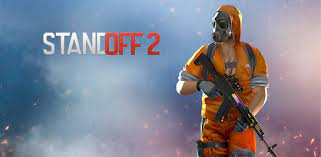
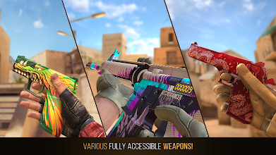
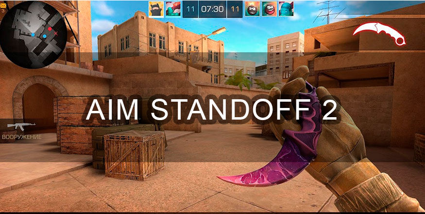
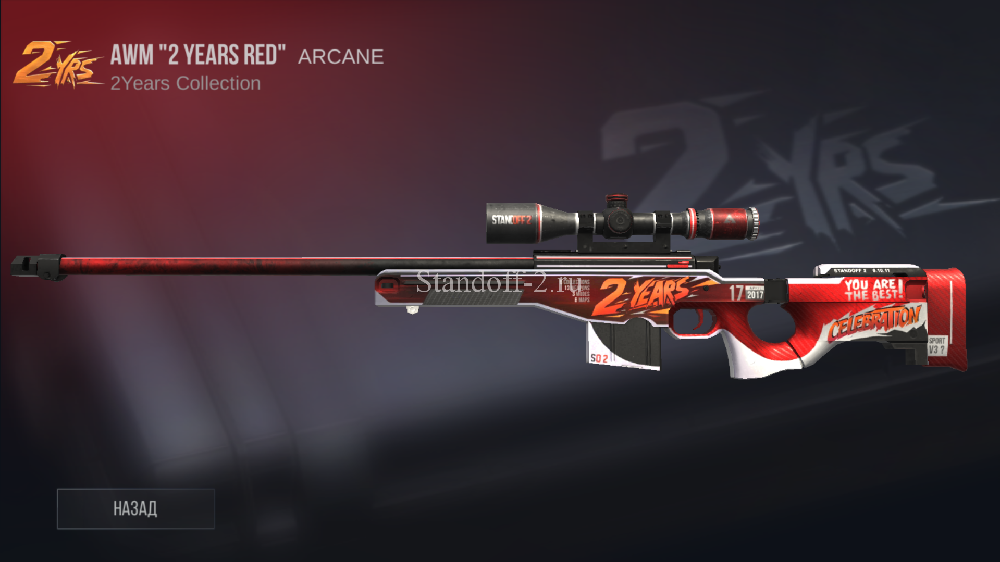
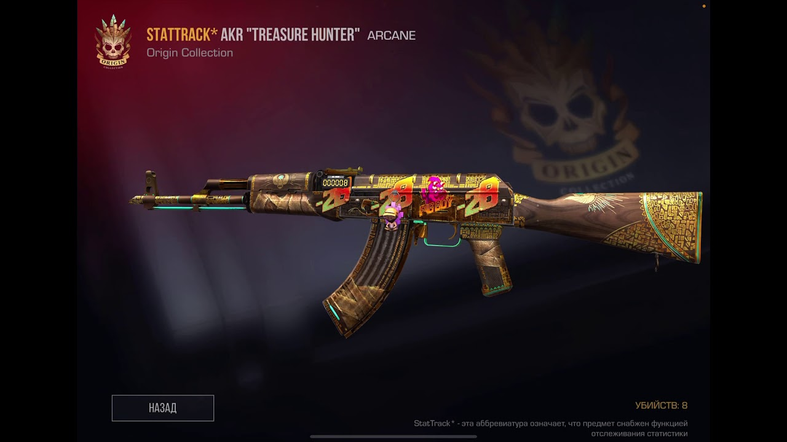
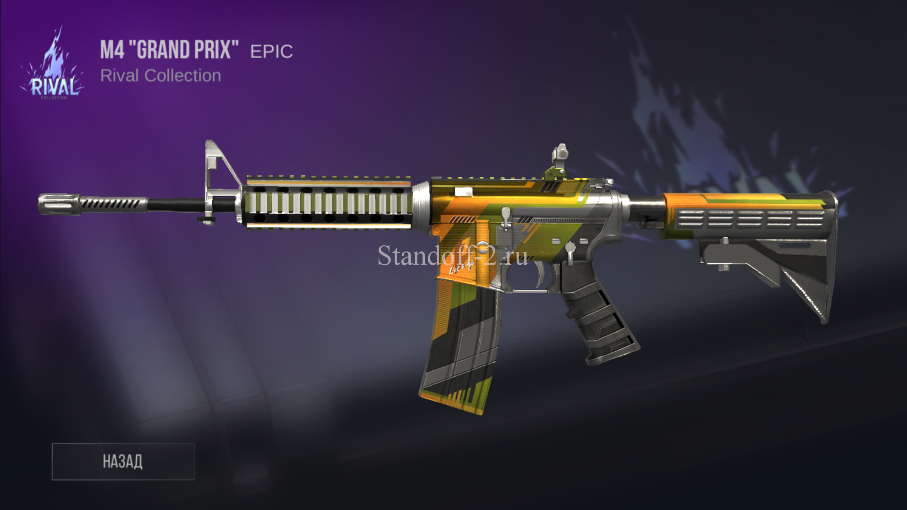

 Standoff 2 представляет собой классический шутер от первого лица с различными режимами игры и арсеналом современного российского и иностранного оружия. Каждое оружие обладает различным набором характеристик, ограничивающих тактические возможности игрока: пробиваемость брони, отдача, темп стрельбы, цена, награда за убийство, боезапас[5]. На начальных этапах игры доступны различные режимы игры, такие как закладка бомбы, командный бой, эскалация и другие. Когда игрок достигнет пятого уровня, ему откроется соревновательный режим[6] и режим «Союзники», матчи в котором проходят в формате 2х2. В отличие от большинства мобильных шутеров, в Standoff 2 отсутствует автострельба и помощь в наведении, но, в то же время, есть и гибкая настройка управления: возможность перемещать, изменять видимость и размеры большей части элементов интерфейса. За реальные деньги в игре продаются только декоративные предметы, не влияющие на игровой процесс[7].
 Standoff 2 – Release Details (англ.). GameFAQs. Дата обращения: 19 апреля 2021. Архивировано 19 апреля 2021 года. Singh, Sushant Rohan Axlebolt’s Standoff 2 Review: Counter Strike on Mobile and it is Good (англ.). PCQuest (19 August 2020). Дата обращения: 28 февраля 2021. Архивировано 27 сентября 2020 года. Jordan, Jon Glocal successes in the Russian mobile games market. Crunching the data with App Annie (англ.). Pocket Gamer (1 May 2020). Дата обращения: 28 февраля 2021. Архивировано 11 апреля 2021 года. Игра Standoff 2 доступна в AppGallery на смартфонах Huawei и Honor. IXBT (24 июля 2020). Дата обращения: 28 февраля 2021. Архивировано 23 октября 2020 года. Уельданова, Адель Подробный гайд по оружию Standoff 2. Игры Mail.ru (14 мая 2019). Дата обращения: 1 марта 2021. Лецкий, Святослав Рассказываем о Standoff 2. Мобильный шутер в стиле PUBG и CS от российской студии. VGTimes (27 марта 2021). Дата обращения: 14 апреля 2021. Архивировано 14 апреля 2021 года. Примаков, Кирилл Как играть в Standoff 2: гайд для новичков. Игры Mail.ru (3 декабря 2020). Дата обращения: 1 марта 2021
 После того, как страница Standoff, в то время известной как Active Shooter, была в мае 2018 года[7] опубликована в магазине Steam, игра вызвала споры: родители жертв стрельбы в средней школе Марджори Стоунман Дуглас выступили против онлайн-игры[8][9]. К моменту отмены игры онлайн-петиция собрала 100 000 подписей[4]. 29 мая выяснилось, что Revived Games и Acid Publishing Group были торговыми марками Антона Макаревского[1] и Аты Бердыева, последний из которых ранее был удален из Steam компанией Valve за нарушение авторских прав после публикации пародии на американский мультсериал «Рик и Морти» под названием Piccled Ricc[10]. Позднее компания объявила, что Revived Games и Acid Publishing Group будут удалены с платформы Steam. Пресс-секретарь сказал Мэтью Голту из Motherboard, что Бердыев — «тролль, имеющий историю злоупотреблений с клиентами, публикации защищенных авторским правом материалов и манипуляций с отзывами пользователей»[3][11]. В дальнейшем в сообщении в блоге Acid Software утверждала, что Steam выпускал другие видеоигры с акцентом на насилие и убийства, приведя в качестве примеров Hatred, Postal и Carmageddon[9]. Вслед за реакцией СМИ на игру Valve предложила «в ближайшее время» провести более широкий пересмотр политики в отношении контента[5][6]. Valve опубликовала эту обновленную политику 6 июня 2018 года, в которой указывалось, что они разрешают любой контент в Steam, если он не является незаконным или «троллингом»[12]. Дуг Ломбарди из Valve использовал Active Shooter в качестве примера такого троллинга, так как игра была «разработана только для того, чтобы вызывать возмущение и провоцировать конфликты своим существованием»[13], и даже если другой разработчик, без истории злоупотребления Steam, какую они нашли у Бердыева, выпустил бы подобный продукт, они все равно удалили бы его за троллинг[14]. Позднее, в июне 2018 года, PayPal закрыл учётную запись Acid Software, сославшись на то, что игра нарушила их Политику допустимого использования[15]. Indiegogo примерно в то же время удалил продукт из своего сервиса[16]. Веб-сайты разработчиков, посвященные игре, были закрыты хостингом Bluehost после петиции Sandy Hook Promise[17].
Если хотите еще информацию то переходите по этим ссылкам и смотрите видео: https://youtu.be/HrwsiGF_RuQ, https://youtu.be/IX9QqvACgdw, https://youtu.be/YnfxOVy_Q7w, https://youtu.be/I_8c6fJO-kg, В этих видео вы можете узнать много вишек о стендоффе и очень быстро прокачаться!
 AWM Основная информация Стоимость: $ 4,350 Патроны: 10/50 Характеристики Урон: 115 ед. Скорострельность: Очень низкая Отдача: Максимальная Дальность: 0 м. Мобильность: 200 ед. Бронепробиваемость: 97,5% Мощность: 250 ед.
 AKR Основная информация Стоимость: $ 2,700 Патроны: 30/90 Характеристики Урон: 35 ед. Скорострельность: Средняя Отдача: Высокая Дальность: 0-150 м. Мобильность: 216 ед. Бронепробиваемость: 78% Мощность: 250 ед.
 M4 Основная информация Стоимость: $ 3000 Патроны: 30/90 Характеристики Урон: 30-40 (в тело) 96 (в голову) Скорострельность: Высокая Отдача: Малая Дальность: Высокая